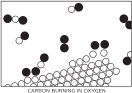
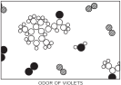
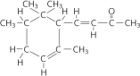

In all of the processes which have been described so far, the atoms and the ions have not changed partners, but of course there are circumstances in which the atoms do change combinations, forming new molecules. This is illustrated in Fig. 1–8. A process in which the rearrangement of the atomic partners occurs is what we call a chemical reaction. The other processes so far described are called physical processes, but there is no sharp distinction between the two. (Nature does not care what we call it, she just keeps on doing it.) This figure is supposed to represent carbon burning in oxygen. In the case of oxygen, two oxygen atoms stick together very strongly. (Why do not three or even four stick together? That is one of the very peculiar characteristics of such atomic processes. Atoms are very special: they like certain particular partners, certain particular directions, and so on. It is the job of physics to analyze why each one wants what it wants. At any rate, two oxygen atoms form, saturated and happy, a molecule.)
The carbon atoms are supposed to be in a solid crystal (which could be graphite or diamond1). Now, for example, one of the oxygen molecules can come over to the carbon, and each atom can pick up a carbon atom and go flying off in a new combination—“carbon-oxygen”—which is a molecule of the gas called carbon monoxide. It is given the chemical name CO. It is very simple: the letters “CO” are practically a picture of that molecule. But carbon attracts oxygen much more than oxygen attracts oxygen or carbon attracts carbon. Therefore in this process the oxygen may arrive with only a little energy, but the oxygen and carbon will snap together with a tremendous vengeance and commotion, and everything near them will pick up the energy. A large amount of motion energy, kinetic energy, is thus generated. This of course is burning; we are getting heat from the combination of oxygen and carbon. The heat is ordinarily in the form of the molecular motion of the hot gas, but in certain circumstances it can be so enormous that it generates light. That is how one gets flames.
In addition, the carbon monoxide is not quite satisfied. It is possible for it to attach another oxygen, so that we might have a much more complicated reaction in which the oxygen is combining with the carbon, while at the same time there happens to be a collision with a carbon monoxide molecule. One oxygen atom could attach itself to the CO and ultimately form a molecule, composed of one carbon and two oxygens, which is designated CO2 and called carbon dioxide. If we burn the carbon with very little oxygen in a very rapid reaction (for example, in an automobile engine, where the explosion is so fast that there is not time for it to make carbon dioxide) a considerable amount of carbon monoxide is formed. In many such rearrangements, a very large amount of energy is released, forming explosions, flames, etc., depending on the reactions. Chemists have studied these arrangements of the atoms, and found that every substance is some type of arrangement of atoms.
To illustrate this idea, let us consider another example. If we go into a field of small violets, we know what “that smell” is. It is some kind of molecule, or arrangement of atoms, that has worked its way into our noses. First of all, how did it work its way in? That is rather easy. If the smell is some kind of molecule in the air, jiggling around and being knocked every which way, it might have accidentally worked its way into the nose. Certainly it has no particular desire to get into our nose. It is merely one helpless part of a jostling crowd of molecules, and in its aimless wanderings this particular chunk of matter happens to find itself in the nose.
Now chemists can take special molecules like the odor of violets, and analyze them and tell us the exact arrangement of the atoms in space. We know that the carbon dioxide molecule is straight and symmetrical: O—C—O. (That can be determined easily, too, by physical methods.) However, even for the vastly more complicated arrangements of atoms that there are in chemistry, one can, by a long, remarkable process of detective work, find the arrangements of the atoms. Figure 1–9 is a picture of the air in the neighborhood of a violet; again we find nitrogen and oxygen in the air, and water vapor. (Why is there water vapor? Because the violet is wet. All plants transpire.) However, we also see a “monster” composed of carbon atoms, hydrogen atoms, and oxygen atoms, which have picked a certain particular pattern in which to be arranged. It is a much more complicated arrangement than that of carbon dioxide; in fact, it is an enormously complicated arrangement. Unfortunately, we cannot picture all that is really known about it chemically, because the precise arrangement of all the atoms is actually known in three dimensions, while our picture is in only two dimensions. The six carbons which form a ring do not form a flat ring, but a kind of “puckered” ring. All of the angles and distances are known. So a chemical formula is merely a picture of such a molecule. When the chemist writes such a thing on the blackboard, he is trying to “draw,” roughly speaking, in two dimensions. For example, we see a “ring” of six carbons, and a “chain” of carbons hanging on the end, with an oxygen second from the end, three hydrogens tied to that carbon, two carbons and three hydrogens sticking up here, etc.
How does the chemist find what the arrangement is? He mixes bottles full of stuff together, and if it turns red, it tells him that it consists of one hydrogen and two carbons tied on here; if it turns blue, on the other hand, that is not the way it is at all. This is one of the most fantastic pieces of detective work that has ever been done—organic chemistry. To discover the arrangement of the atoms in these enormously complicated arrays the chemist looks at what happens when he mixes two different substances together. The physicist could never quite believe that the chemist knew what he was talking about when he described the arrangement of the atoms. For about twenty years it has been possible, in some cases, to look at such molecules (not quite as complicated as this one, but some which contain parts of it) by a physical method, and it has been possible to locate every atom, not by looking at colors, but by measuring where they are. And lo and behold!, the chemists are almost always correct.
It turns out, in fact, that in the odor of violets there are three slightly different molecules, which differ only in the arrangement of the hydrogen atoms.
One problem of chemistry is to name a substance, so that we will know what it is. Find a name for this shape! Not only must the name tell the shape, but it must also tell that here is an oxygen atom, there a hydrogen—exactly what and where each atom is. So we can appreciate that the chemical names must be complex in order to be complete. You see that the name of this thing in the more complete form that will tell you the structure of it is 4-(2, 2, 3, 6 tetramethyl-5-cyclohexenyl)-3-buten-2-one, and that tells you that this is the arrangement. We can appreciate the difficulties that the chemists have, and also appreciate the reason for such long names. It is not that they wish to be obscure, but they have an extremely difficult problem in trying to describe the molecules in words!
How do we know that there are atoms? By one of the tricks mentioned earlier: we make the hypothesis that there are atoms, and one after the other results come out the way we predict, as they ought to if things are made of atoms. There is also somewhat more direct evidence, a good example of which is the following: The atoms are so small that you cannot see them with a light microscope—in fact, not even with an electron microscope. (With a light microscope you can only see things which are much bigger.) Now if the atoms are always in motion, say in water, and we put a big ball of something in the water, a ball much bigger than the atoms, the ball will jiggle around—much as in a push ball game, where a great big ball is pushed around by a lot of people. The people are pushing in various directions, and the ball moves around the field in an irregular fashion. So, in the same way, the “large ball” will move because of the inequalities of the collisions on one side to the other, from one moment to the next. Therefore, if we look at very tiny particles (colloids) in water through an excellent microscope, we see a perpetual jiggling of the particles, which is the result of the bombardment of the atoms. This is called the Brownian motion.
We can see further evidence for atoms in the structure of crystals. In many cases the structures deduced by x-ray analysis agree in their spatial “shapes” with the forms actually exhibited by crystals as they occur in nature. The angles between the various “faces” of a crystal agree, within seconds of arc, with angles deduced on the assumption that a crystal is made of many “layers” of atoms.
Everything is made of atoms. That is the key hypothesis. The most important hypothesis in all of biology, for example, is that everything that animals do, atoms do. In other words, there is nothing that living things do that cannot be understood from the point of view that they are made of atoms acting according to the laws of physics. This was not known from the beginning: it took some experimenting and theorizing to suggest this hypothesis, but now it is accepted, and it is the most useful theory for producing new ideas in the field of biology.
If a piece of steel or a piece of salt, consisting of atoms one next to the other, can have such interesting properties; if water—which is nothing but these little blobs, mile upon mile of the same thing over the earth—can form waves and foam, and make rushing noises and strange patterns as it runs over cement; if all of this, all the life of a stream of water, can be nothing but a pile of atoms, how much more is possible? If instead of arranging the atoms in some definite pattern, again and again repeated, on and on, or even forming little lumps of complexity like the odor of violets, we make an arrangement which is always different from place to place, with different kinds of atoms arranged in many ways, continually changing, not repeating, how much more marvelously is it possible that this thing might behave? Is it possible that that “thing” walking back and forth in front of you, talking to you, is a great glob of these atoms in a very complex arrangement, such that the sheer complexity of it staggers the imagination as to what it can do? When we say we are a pile of atoms, we do not mean we are merely a pile of atoms, because a pile of atoms which is not repeated from one to the other might well have the possibilities which you see before you in the mirror.
Figure 1-8

Figure 1-9

Figure 1-10
